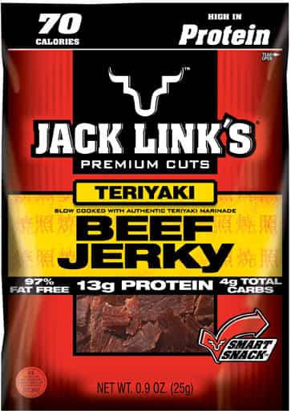
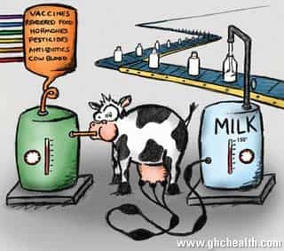
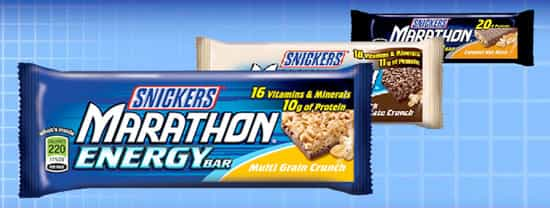
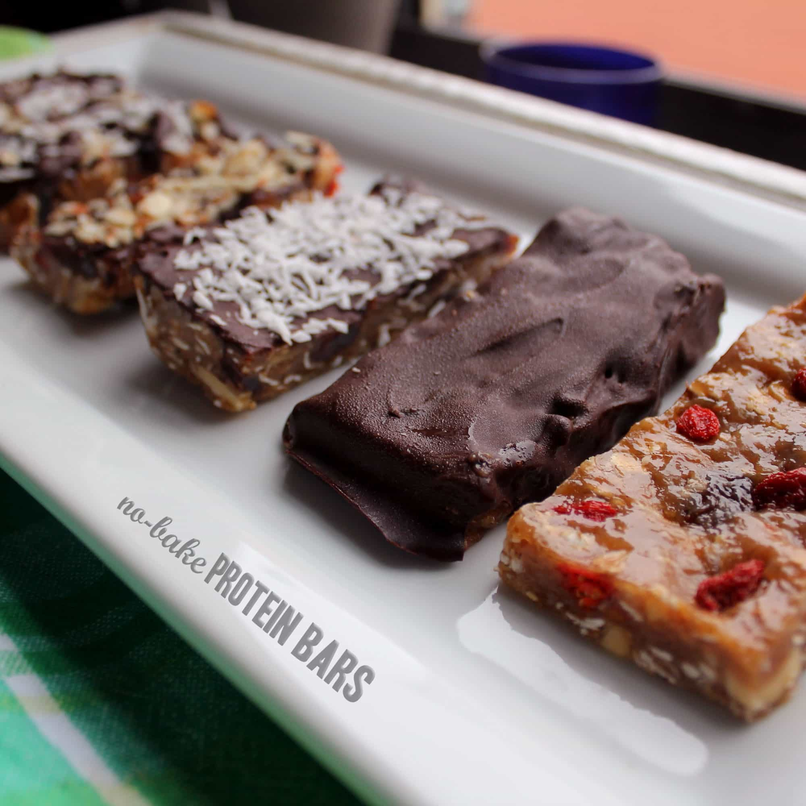

Eric is a self-employed artist who writes about modern culture. You can follow him on twitter.


When I first became interested in health, I thought protein bars and power bars would be a good substitute for snaking. Over time I’ve found they don’t help with weight loss, or building muscle, and actually drain your energy. After looking at the ingredients it’s clear why.
Soy protein is TERRIBLE for men. It will fuck with your hormones to the point where it has actually been known to make children start puberty earlier. The amount of estrogen in a couple cups of soy milk is equivalent to three to five birth control pills. The next time you see a someone eating soy protein after a workout, just imagine them reaching into their girlfriends purse and popping her birth control pills like M&Ms.
Nearly all protein bars have soy protein in them. Seriously, it’s in everything. It’s in Cliff Bars, Builders Bars, Luna Bars, Zone Bars, Balance Bars, Special K Bars, ProMax Bars, SoyJoy Bars (duh), and some Met-Rx bars. In most grocery stores, it’s hard to find more than five protein bars WITHOUT soy in them.
And it’s not just protein bars. Government subsidies have made soy such a cheap form or protein that soy turns up in everything. While traveling, I went to get my protein fix through good ol’ fashioned beef jerkey, which listed “HIGH IN PROTEIN” right on the front. When I went to check the ingredients on the back, at the top of the list was “SOY PROTEIN ISOLATE.” After diluting the natural protein with preservatives, they had to add soy protein to the beef jerky to get that “high in protein” listed on the front.

Instead of labeling it “beef jerky” they might as well call it “estrogen pellets.”
So you’re going to avoid soy with traditional Whey Protein, right? Not so fast. Most whey protein is sourced from cows that have been fed corn, antibiotics, and the evil feminist plot that is soy. The milk, meat, and protein those cows produce is going to contain all the unhealthy ingredients they ate.

Unless you get whey protein that has been sourced from organic grassfed cows (which does exist) or non-soy based vegan protein, you’ll be taking in all the toxicity of a factory farm. Because of this, whey has been linked to inflammation and long term health problems. However, like bacon and other factory farmed meats, the real problem is the toxicity created by the food industry.
Even bars listed as all-natural often come loaded with a bundle of unsafe, unhealthy artificial ingredients, including those typically found in candy bars. At the top of the list is high fructose corn syrup, better known as…
Energy bars are manufactured for taste, not nutrition. The food industry understands that most people don’t want to make real changes to their diet, they just want to feel healthy while eating the same thing they’ve been eating. You’ll be hard pressed to find a major energy bar with under 20 grams of sugar.
Most protein bars have as much high fructose corn syrup as a Snickers bar. In fact, Snickers bars are listed has having 27g of sugar, and making their sugar content lower than some major protein bars.
It’s so bad, Snickers released their own energy bar.

And why not? All they had to do was add some of that yummy soy protein that makes your daughter grow boobs two years younger to their bestselling candy bars.
Often bars will be listed as “low-sugar,” when they actually have 29g of sugar alcohol (I’m looking at you, CarbRite bars). Read the full ingredients – 4g of sugar doesn’t mean it won’t leave you feeling like the day after a five year old’s Halloween candy binge.
You need a certain amount of carbs to build muscle. Most of the carbs found in protein bars are sugary, or toxic. Unless you’re trying to bulk so hard you don’t care what you eat, the carbs in protein bars are going to hurt more than help. You’d be just as healthy getting your carbs from Snickers bars, since they basically have the same ingredients.
Even the healthier protein bars usually have flour and grains. The rush of energy cause by sugar quickly gives way to a crash caused by the other ingredients. If you really need your carbs right after working out, have a shake or bring a bag of cashews with you.
I’ll admit, a few protein bars have nuts in them, which are healthy. But so do Snickers.
Protein bars are expensive, especially if you plan to make them a part of your daily workout food. At 2-4$ a bar, they quickly add up to the the cost of a full meal eating out. Which would you rather have – three protein bars or a full steak burrito?
Compare the cost of a box of protein bars to a bag of Snickers. The ingredients are basically the same plus protein, but Snickers are well under a dollar each. Is there really 2$ worth of toxic whey or soy protein going into these bars, or do food marketers just know people will pay extra to feel healthy?
Save your money. If you want carbs, get sweet potatoes, if you want protein, get a clean organically sourced protein powder or grass-fed beef, and if you want snacks…
It’s not hard. You can find hundreds of recipes online. My personal favorite are these protein cookies. Everything in them is healthy, and designed to increase strength and balance your hormones. Mix all the ingredients in a bowl, plop them on a cookie tray, and bake.
Most recipes combine powder or chopped material – protein, nuts, flax seed, health supplements, dried fruit – with a bonding agent to hold it together – water, almond milk, coconut oil, or almond butter. Put a layer of shredded coconut or chopped almonds on top and it’ll start to look like a fine desert, but with the health content of a morning shake.
Once you’ve got the hang of it, it’s really easy to and customize them for your needs. Want to balance hormones or increase sex drive? Add maca to your recipes. Want more than the 13-20g protein found in most bars? Just add more. (Note: high heat can break down whey protein, so use non-soy vegetable based protein when cooking, or make them cold.) Want more healthy fats? Use almond butter, coconut oil, or eggs.

If you can’t cook or find a woman to cook for you, you can always go back to sugar-coated estrogen pellets, or dipping Snickers in soy milk. But, if you want to eat healthy, avoid store bought protein bars, and make your own.
Read More: 5 Easy Ways To Boost Your Testosterone
{kind=link}